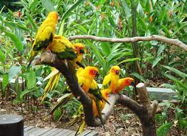
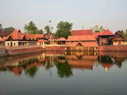
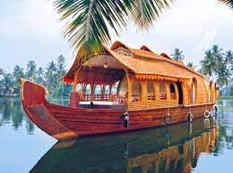

Alappuzha (or Alleppey) is a city on the Laccadive Sea in the southern Indian state of Kerala. It's best known for houseboat cruises along the rustic Kerala backwaters, a network of tranquil canals and lagoons. Alappuzha Beach is the site of the 19th-century Alappuzha Lighthouse. The city's Mullakkal Temple features a traditional design. Punnamada Lake's snake boat races are a well-known annual event.In 2016, the Centre for Science and Environment rated Alappuzha as the cleanest town in India. Alappuzha is considered to be the oldest planned city in this region and the lighthouse built on the coast of the city is the first of its kind along the Laccadive Sea coast. The city is situated 55 km from Kochi1 and 155 km north of Trivandrum . A town with canals, backwaters, beaches, and lagoons, Alappuzha was described by George Curzon, Viceroy of India at the start of the 20th century, as the "Venice of the East." Hence, it is known as the "Venetian Capital" of Kerala. It is an important tourist destination in India.The Backwaters of Alappuzha is one of the most popular tourist attractions in Kerala which attracts millions of domestic and international tourists to the district and employs vast number of locals in the private sector.
DESTINATIONS Must See
|

Kumarakom Bird Sanctuary
Kumarakom Bird Sanctuary is among the most popular bird watching spots
Learn more

Ambalapuzha Temple
Ambalappuzha Sree Krishna Swamy Temple is an Indian Hindu temple dedicated to Krishna
Learn more

Houseboat Service
A vacation to Kerala is incomplete without spending some relaxing time in the fantastic backwaters
Learn more